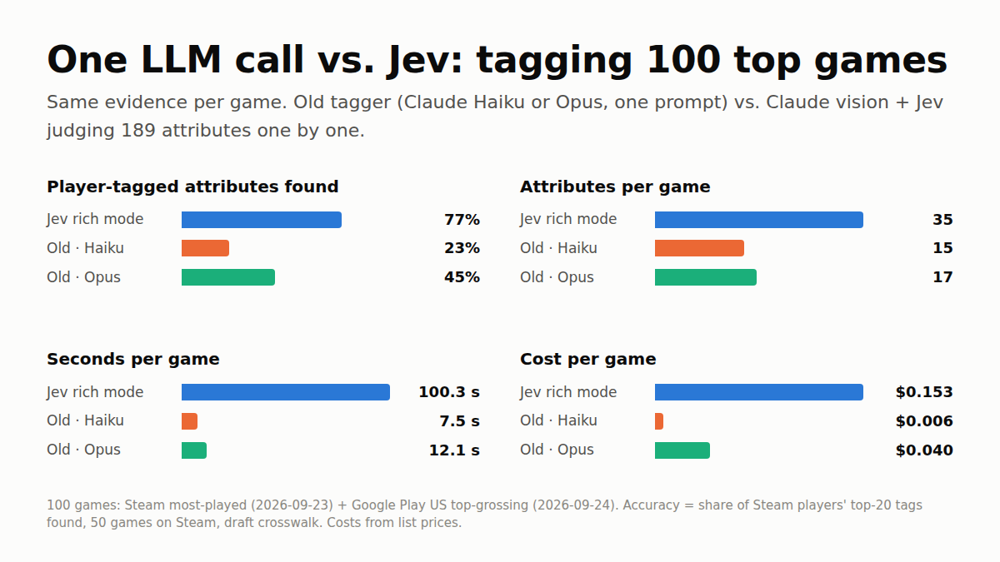

GameTagger benchmark · 100 top games · September 2026
Jev versus one big prompt
How each method works
Same evidence, two very different ways to use it
The old site asks one model one big question. The new pipeline separates looking from judging: Claude only describes what is visible, and Jev decides, so every answer can be traced to what was seen.
One prompt the original site · Haiku 4.5 (standard) or Opus 4.8 (deep)
ReadsThe game's name, store and Wikipedia text cut to 1,000 characters, and 2 screenshots per store at 600 px
→
AsksOne Claude call covering the whole game
→
ReturnsAbout 91 yes/no tags and one of 59 genres; an unlisted genre is silently replaced
Jev pipeline Claude Sonnet 5 looks · Jev (jev-1.13.0) judges
LooksClaude describes every screenshot and six short trailer clips, and is not allowed to name genres or tags
→
SplitsAll store text, Wikipedia and descriptions become numbered claims; the game's title is withheld
→
JudgesJev answers 189 attribute questions, each with only the evidence allowed to answer it, then the genre hierarchy
What differs
One prompt
Jev pipeline
Knows the game's name
Yes, so it can lean on what it remembers
No, the title is withheld from Jev
Images
2 per store, 600 px wide
Every screenshot and 6 trailer clips
Model calls per game
1
One per image or clip, then Jev in batches of up to 60 questions
Answers
Yes or no per tag
Present, absent, unknown or conflicting, with probabilities
Genre
Must pick 1 of 59
Full v4.1 hierarchy; says “insufficient evidence” rather than guess
Evidence trail
None
Every tag cites the claims behind it
Accuracy
All attributes the Steam tags point to
Share each method reported present
Only attributes both vocabularies can name
The fair head-to-head
Said “no” to something players tagged
Share of player-tagged attributes a method explicitly called absent. Lower is better.
Cost
Cost per game (mean)
List prices × provider-reported tokens
Time per stage
Wall-clock time per game (median of each stage)
Shared evidence gathering excluded (identical for every method); three games ran in parallel
Tokens
Tokens per game (mean)
Solid: input. Lighter end: output.
Tags per game
Attributes reported present per game (median)
Old keys translated into the Genome vocabulary through the draft crosswalk
Game library
Browse every tagged game
Open a game to see everything the Jev pipeline decided: its genre with the alternatives it weighed, and every attribute it judged present, likely, absent or conflicting. Every tag links to its definition. The old method's answers and Steam players' own top tags are shown alongside.
Tag dictionary
What every tag means
Every game
All 100 games, side by side
Accuracy is shown for the 50 Steam games, the only ones with a player-tag answer key. Click a column to sort.
LinkedIn kit
Images and ready-to-post text
Seven 1200 × 1500 slides for a carousel, plus a 1200 × 675 single-image card. Each image carries its sample, dates and answer key.

Request a game
Want a game tagged?
Team members can request any game on the requests board. Requests are reviewed, then tagged in batches with the Jev pipeline. A public request form is on the way.